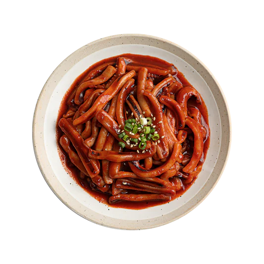

오징어볶음
재료: 오징어(국내산), 양파(국내산), 대파(국내산), 당근(국내산), 깻잎(국내산), 고춧가루(국내산), 생강(국내산)
오징어볶음의 특징
고추장을 기본으로 고춧가루와 설탕을 조합하여 매콤하면서도 달콤한 맛을 냅니다. 한국인의 입맛에 맞는 밥반찬으로 사랑받는 요리입니다. 오징어는 적당히 익히면 쫄깃하면서 부드러운 식감을 제공합니다. 과도하게 익히면 질겨질 수 있으니 단시간에 볶아내는 것이 중요합니다. 양파, 대파, 당근 등 채소를 곁들여 색감과 영양을 더하며, 깻잎이나 고추를 추가하면 향긋한 풍미가 올라갑니다.